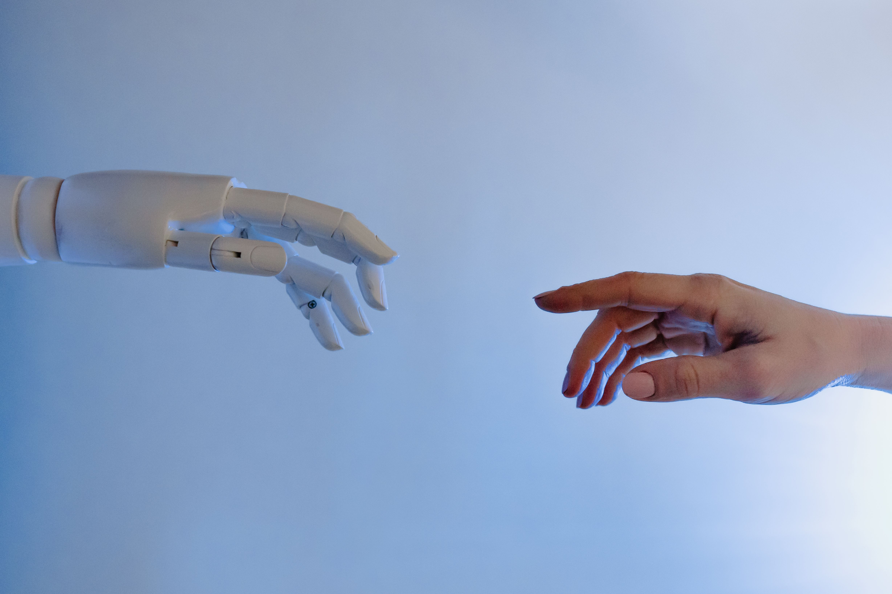

تقنيات الذكاء الاصطناعي للأشخاص ذوي الهمم
ما نعدّه تجربة عابرة، مثل إغماض العينين أو محاولة الكتابة دون استخدام اليدين، هو واقع يومي لملايين الأشخاص ذوي الهمم. وقد يحوّل قراءة كتاب، أو استخدام الهاتف، أو ركوب الحافلة، إلى سلسلة من العوائق. لذلك يمكن توجيه تقنيات الذكاء الاصطناعي لتقليل هذه العوائق وتعزيز الاستقلالية، لا لتغيير الشخص أو تعريفه بإعاقته.
أبرز عوائق الوصول
تختلف التحديات باختلاف الإعاقة البصرية أو السمعية أو الحركية أو الإدراكية، كما تتداخل في الحياة اليومية. ومن أبرزها:
الوصول إلى المعلومات
قد لا تكون الصور والرسوم والنصوص المرئية قابلة للقراءة بقارئات الشاشة، وقد يفتقر المحتوى الصوتي إلى النص أو الترجمة.
التفاعل الرقمي
تفترض واجهات كثيرة استخدام اليدين والعينين معًا، أو تعرض أزرارًا ورموزًا غير موصوفة.
التنقل والاستقلالية
قد تصبح قراءة اللوحات والإشارات، ومعرفة الاتجاهات والعوائق، تحديات معقدة.
التعليم والعمل
تحد البيئات الرقمية غير المهيأة من المشاركة في المحاضرات والاجتماعات والأنظمة الإلكترونية.
الحواجز الاجتماعية
قد تزيد العزلة والاعتمادية وصعوبة التعبير عن الاحتياجات من أثر العوائق اليومية.
الذكاء الاصطناعي طبقة تمكينية يمكنها تقليل أثر العوائق، لا إزالة الإعاقة ذاتها.
التعرف على الصور والنصوص
تساعد أنظمة الرؤية الحاسوبية على تحويل محتوى بصري إلى وصف أو نص يمكن قراءته صوتيًا أو تكبيره. وتظهر الفكرة في التعرف على النصوص والأشياء والمشاهد المحيطة[1].

تحويل الصور إلى نص (OCR)
تصوير صفحة أو لوحة شارع وتحويل النص الظاهر إلى نص رقمي قابل للقراءة الصوتية أو التكبير.
التعرف على الأشياء والمشاهد
وصف ما تلتقطه الكاميرا، مثل شخص قرب باب أو إشارة توقف، للمساعدة على فهم البيئة.
وصف الصور على الويب
اقتراح نص بديل يساعد قارئ الشاشة على نقل محتوى الصورة، مع أهمية مراجعة الوصف للتأكد من دقته.
التعرّف على الكلام وتحويله
تفتح تقنيات معالجة اللغة والتعرف على الكلام وتحويل النص إلى صوت طرقًا بديلة للتواصل، سواء للكتابة دون لوحة مفاتيح أو لمتابعة حديث في محاضرة أو اجتماع أو برنامج مرئي[2].

الإملاء الصوتي
يُملي الشخص النصوص لإرسال بريد أو كتابة بحث أو استخدام برامج العمل.
الكلام إلى نص
يعرض الحديث في المحاضرات والاجتماعات كنص مباشر يمكن قراءته وأرشفته والبحث فيه.
النص إلى كلام
تحوّل واجهة كتابة أو اختيار كلمات إلى صوت مفهوم لمن لا يستطيع الكلام.
الهدف هو دعم التواصل في الاتجاهين: فهم ما يقوله الآخرون والتعبير عن الذات بوضوح.
واجهات بديلة للأشخاص ذوي الإعاقة الحركية
يمكن للذكاء الاصطناعي أن يجعل الأجهزة والبيئات الرقمية أكثر مرونة، عبر وسائل تحكم لا تعتمد على لوحة المفاتيح أو الفأرة وحدهما.
حركة العين أو الرأس
تتابع الأنظمة حركة العين أو الرأس وتحولها إلى مؤشر لاختيار العناصر وكتابة النصوص.
التعرف على الإيماءات
تستجيب الواجهة لحركات بسيطة، مثل إمالة الرأس أو تحريك إصبع.
التحكم الصوتي المركب
تنفذ أوامر متعددة الخطوات، مثل فتح البريد والبحث عن رسالة محددة[3].
الأطراف الصناعية الذكية
تتعلم خوارزميات التعلّم الآلي من نمط الحركة لتكييف الاستجابة مع المستخدم بمرور الوقت.
تعليم ذكي يراعي احتياجات المتعلم
يمكن للتجارب التعليمية المخصصة أن تراعي نوع الإعاقة ووتيرة التعلم، بشرط أن تكون الأدوات قابلة للوصول ومناسبة للسياق التعليمي.
لذوي الإعاقة البصرية
مواد قابلة للقراءة الصوتية، واختبارات شفهية، ومحتوى مُعدّ وفق معايير الوصول.
لذوي الإعاقة السمعية
ترجمة نصية فورية، ومواد مكتوبة، ومحاضرات يمكن تلخيصها وإعادة صياغتها.
لصعوبات التعلم والإعاقات الإدراكية
شروحات بديلة وأمثلة ووسائل عرض مختلفة، مع متابعة التقدم لدعم المعلم والمتعلم.
مساعدة التنقل والاندماج في المدن الذكية
يمكن دمج بيانات المواقع والرؤية الحاسوبية والبيانات الحضرية لتقديم خدمات تنقل أكثر ملاءمة، مع مراعاة الخصوصية وسلامة المستخدم.
- إرشاد صوتيتطبيقات توضح الاتجاهات وإشارات المرور والعوائق ونقاط الاهتمام القريبة.
- بيئة تستجيبأنظمة حضرية تتكيف مع احتياجات مستخدمي الكراسي المتحركة أو ذوي الإعاقة البصرية.
- مساعدة في الأماكن العامةروبوتات ترشد الزوار في المطارات والمستشفيات وتقدم معلومات صوتية أو نصية.
المخاطر التي ينبغي الانتباه لها
الاعتمادية المفرطة
الاعتماد الكامل قد يقلل ممارسة مهارات بديلة، ويزيد التعرض للخطر عند تعطل النظام.
الخصوصية والبيانات الحساسة
قد تجمع الأدوات بيانات صحية أو صوتية أو حركية؛ لذا يجب تحديد الوصول والحماية بوضوح.
التحيز والتهميش الرقمي
قد لا تعمل النماذج جيدًا إذا لم تشمل بياناتها تنوع اللهجات وطرق التعبير والحالات.
الكلفة وإتاحة التقنية
قد تحرم الكلفة أو الحاجة إلى اتصال وأجهزة حديثة فئات من الاستفادة.
المعايير والرقابة
ينبغي اختبار الحلول مع الأشخاص ذوي الهمم والتحقق من سلامتها وقابلية استخدامها قبل اعتمادها.
تقنية تمكّن الإنسان
تمتد تطبيقات الذكاء الاصطناعي من قراءة النصوص ووصف الصور إلى التواصل والتحكم والتعلم والتنقل. وتتحقق فائدتها عندما تُصمم مع الأشخاص ذوي الهمم، وتدعم استقلاليتهم، وتحمي خصوصيتهم، وتظل بديلًا مساعدًا لا شرطًا وحيدًا للمشاركة.